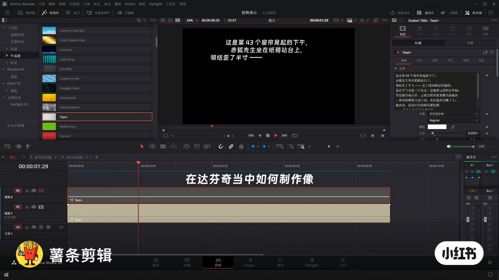
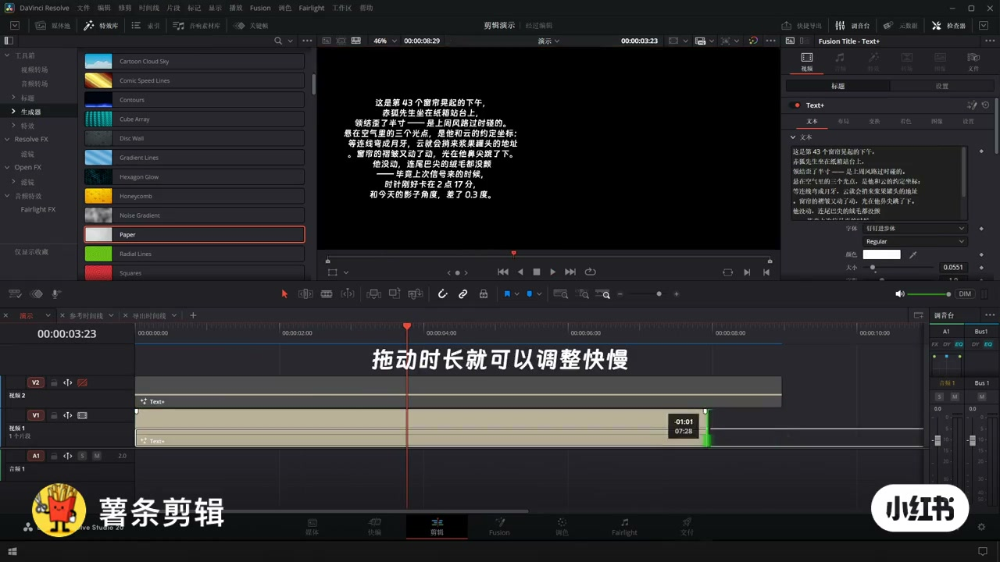
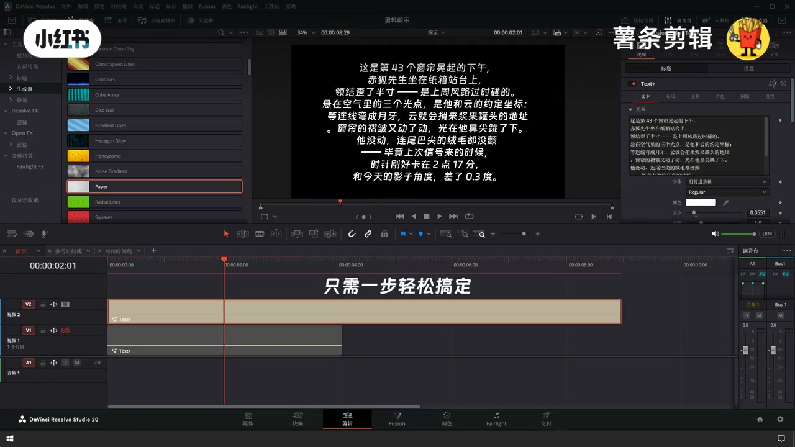
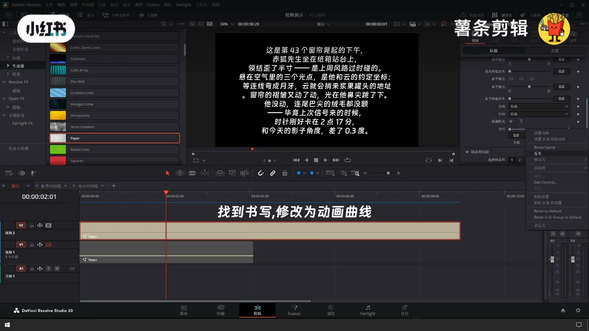
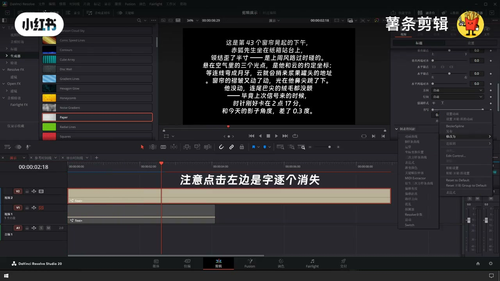
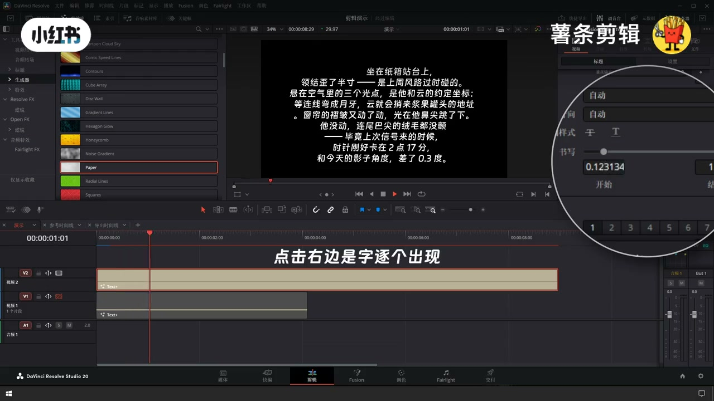
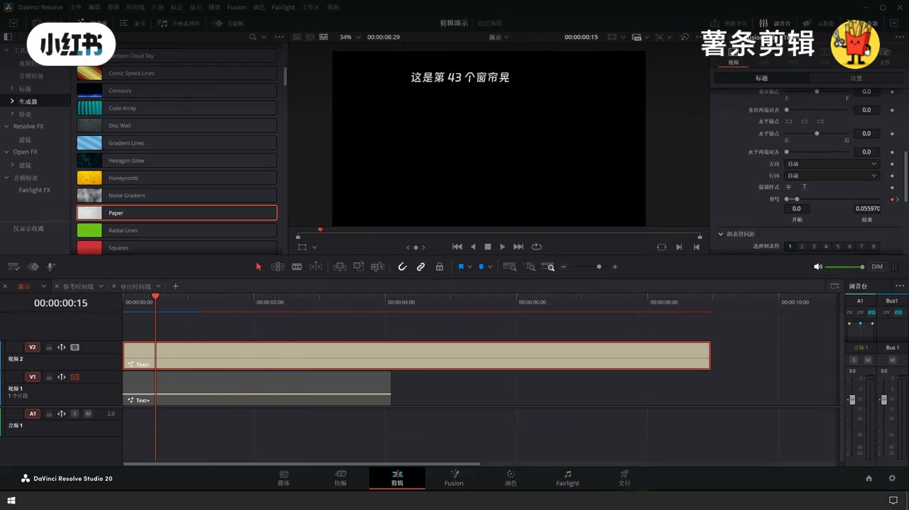
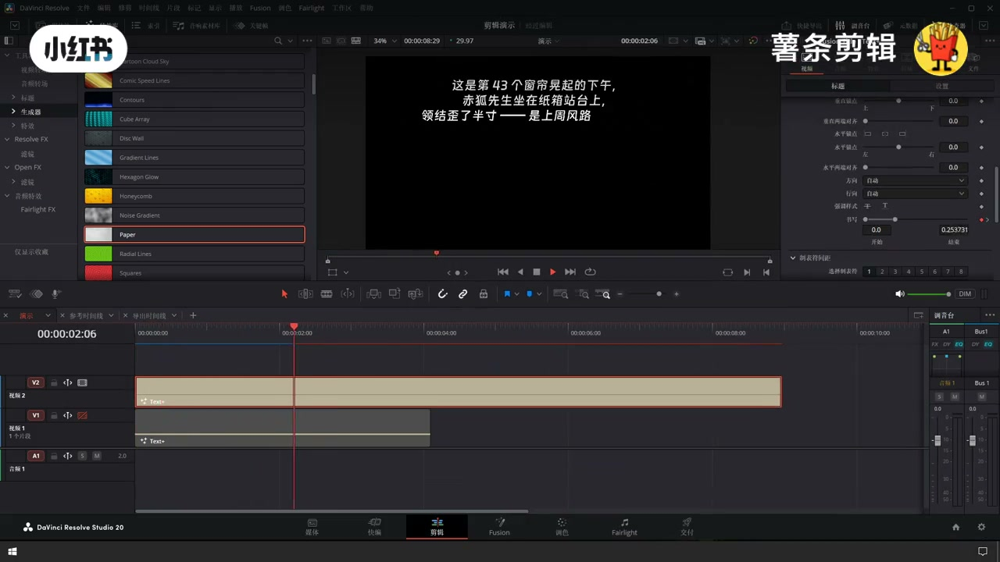

内容要点
用 Fusion Title Text+ 做类似剪映的打字机：字逐个出现；拖动字幕时长即可调快慢，不需要关键帧。注意点击方向会决定逐个出现还是逐个消失。
知识结构
[00:00–00:08]
Text+ 上屏与目标
像剪映一样的打字机效果。
[00:08–00:18]
一步搞定：拖时长调速度
不需要关键帧。
[00:18–00:26]
方向与排版收尾
确认逐字出现；检查位置。
总步骤
- 时间线加 Text+ 写入文案
- 打开写入/打字机类动画
- 拖长或缩短片段调速度
- 确认方向是出现而非消失
总结
打字机=Text+ 写入动画；时长控制速度；点左边可能变成逐字消失——方向别点反。
适用边界：适合剪辑页 Text+ 标题；复杂逐字样式/路径动画仍可能要 Fusion 细调。
踩坑：点错写入方向会变成「逐个消失」；字号过小（如 0.055）在竖屏要再放大；误以为必须打关键帧。
00:00–00:08Text+ 上屏与目标
片头提问如何做剪映式打字机。时间线使用 Text+，检查器设定字体（例：钉钉进步体）与字号，预览黑底白字逐行出现。

[00:02] Text+ 文案上屏，提问如何做打字机
Text+ on screen: how to make a typewriter effect

[00:05] 检查器设定字体与字号
Inspector: set font and size
00:08–00:18一步搞定：拖时长调速度
口播要点：拖动时长就可以调整快慢，也不需要关键帧。把 Text+ 片段拉长→打字变慢；缩短→变快。画面提示「只需一步轻松搞定」。

[00:10] 只需一步：拖动时长调快慢
One step: drag clip length to change speed

[00:14] 拉长片段字出得更慢
Longer clip = slower type-on

[00:17] 注意：点左边可能变成字逐个消失
Caution: left control may type-off instead
00:18–00:26方向与排版收尾
写入方向点反会出现「逐个消失」。检查器可调位置/锚点；双轨 Text+（V1/V2）时可一轨标题一轨正文。成片黑底白字逐字显现即可交付。

[00:20] 确认写入方向为逐字出现
Confirm write-on direction = appear

[00:23] 检查器微调位置与字距
Tweak position and tracking in Inspector

[00:25] 成片：打字机效果预览
Final typewriter preview
口述/画面要点（4段）
结合 Whisper medium 与画面大字整理；专有名词已校对。
在达芬奇当中如何制作像剪映一样的打字机效果
拖动时长就可以调整快慢，也不需要关键帧
只需一步轻松搞定
注意点击左边是字逐个消失